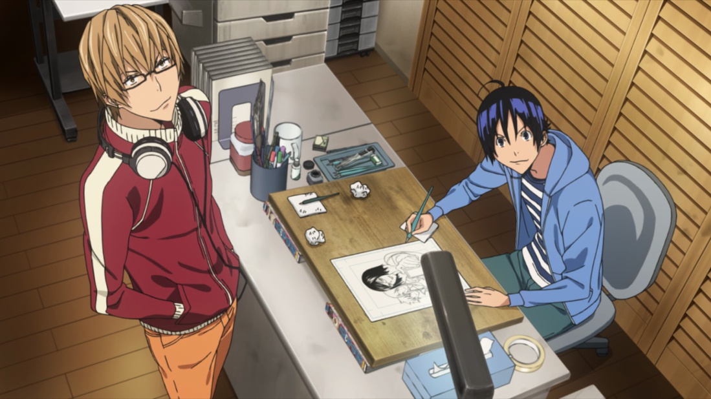
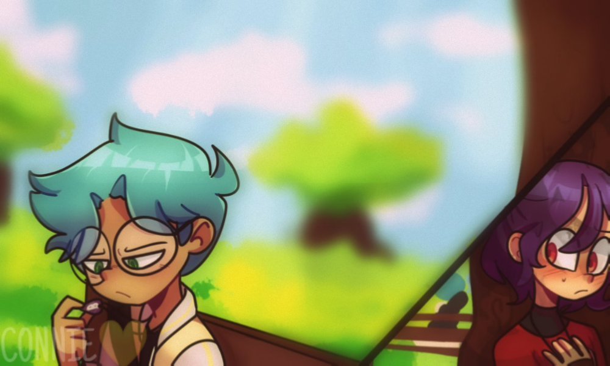
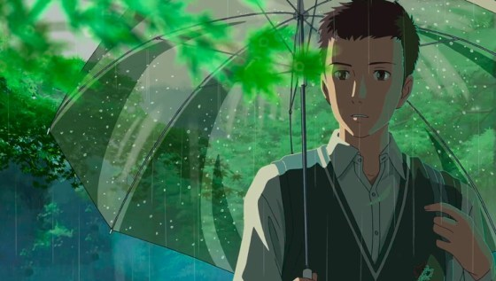

Que tal, me presento y me abstengo de dar a conocer mi informacion personal... de momento solo llamenme "Hokaru". Posiblemente este sea mi portal para mis quejas jajaj, pero ya hablando seriamente, quiero decirles primero que nada que este proyecto me emociona. ¿quien no quisiera tener su pagina? y mas aun cuando queremos darnos a conocer, ya sea por alguna hablidad, capacidad o por humor puro y duro.
~Lo ultimo de mi blog~
~Las palabras son poderosas~/h4>
Puede y tal vez asi sea el caso, los temas que hablan de la poca sensibilidad de las personas siempre nos dejan un mal sabor de boca. El hablar de dichos temas nos hace reventar la burbuja de "todos son buenos" y volvemos a la cruel realidad que nos espera en donde efectivamente, hay personas que se ganan nuestro cariño y nos prestan atencion caundo mas los necesitamos. El problema es que tambien existira siempre ese tipo de persona que solo esta con nosotros por intereses que lo beneficien (atencion, dinero, proteccion) y todo esto sumado a las situaciones espontaneas de conocer a alguien nuevo que se gana nuestra confianza, para que al final, solo nos apuñale por la espalda, haciendo lo que escorias como ellos pueden, hablar de mas.

~Alternativas de expresion ademas de las palabras~
Ahora seamos sinceros, creo que no soy el unico que ah pensado sobre esto alguna vez. Para mi, aquellas personas que pueden expresarse y sin necesidad de utilizar las palabras, son oro puro, y que si estas personas estan sufriendo, te lo haran saber indirecta o directamente utilizando como alternativa un dibujo, una pintura, una escultura una imagen y/o fotografia. Estas personas buscan darse a conocer utilizando su talento o habilidad, y estan preparadas para cualquier adversidad, algunos los llaman artistas, dibujantes o sketchers, yo sin embargo, los llamo maestros.

~Supera no solo ignores~
Me pondre un poco serio en este tema, tengo bastante que decir al respecto pero... voy a resumirlo para ustedes.
Asi es... tu, si tu, el/la que esta leyendo esto, necesitas superarte y dejar de comportarte como un descerebrado, preguntas ¿porque te llamé así? bien aqui esta la respuesta. Seamos realistas, quien de nosotros no ha escuchado a esa persona decir la vida me hizo haci o la tipica frase "yo soy asi y punto". No saben como me surra, me laxa, me defeca y excremanta(dijera Franco Escamilla) que digan tremenda sandes, sean concientes de los siguiete: deicr "yo soy asi y punto" esta muy pobre de argumentos, es como que un violador dijera lo mismo, ¿lo tomariamos bien? por supuesto que no, analizen bien esa ridicules, personalmente, soy alguien un tanto asocial, pero eso no quiere decir que siempre soy asi, incluso conosco personas que suelen estar pegados a su serie anime y en ese momento ellos son otra persona, pero cuando se trata de convivir, lo hacen y eso es lo que mas aprecio, pues cuando se trata de su series se pueden llamar Haruno, Kika, Soah etc. Pero cuando eso termina se vuelven a llamar Jose, Manuel y Karla ¿esto que quiere decir? quiere decir que debemos ser concientes que el ser humano siempre esta abierto a cosas nuevas y dispuesto al cambio.
Un dia como ejemplo me encontraba platicando con un persona acerca de un proyecto que se haria y se entregaria tre dias despues, a lo cual lo que me dijo paso de hacerme enojar a sentir lastima por la persona "Esque me dio flojera y pues soy haci, cuando algo me da flojera no lo hago" ¿enserio? es un argumento tan p..dejo, aclaro que no tengo algo en contra de esa persona, en cierto punto la entiendo, yo tambien eh tenido dias de querer estar durmiendo. Pero si hay algo pendiente y sobre todo es importante, debemos cambiar esa actitud ridicula a la de ya. Si seguimos ignorando estos comportamientos despues lo lamentaremos, hay que estar dispuestos a cualquier cambio, ya que simepre aprendermemos algo de ello.

~La depresion no es un premio~
El tema que estoy a punto de abordar es demasiado intenso...
primero vamos a realizar un diminutio experimento, quiero que mentalmente contestes estas preguntas y analizes tu propia situacion(emocional,social,familiar y laboral).
¿Tu sufres de alguna depresion? ¿cual? ¿porque crees que las sufres? ¿Te consideras una persona feliz? ¿Porque no? ¿Que es lo que necesitas para poder ser completamente feliz?
Bien ahora si vamos a continuar, el motivo de ese diminuto experimento, es para que tu mismo(a) sepas si ganaste un premio. ¿Cual es este premio te preguntaras? tal vez ya lo hayas intuido por ti mismo(a) pero se trata de la depresion, aunque lamento decepcionarte porque...
La deperesion no es algun premio, bueno, para mi almenos no lo es y creo que muchos mas piensan asi. Entonces ¿por que las personas se ensañan con hacer ver a la depresion como un premio? realmente me cuesta comprender a tal punto que ya no busco hacerlo, ser feliz no es dificil sin embargo, asi lo vemos todos en algun momento. una encuesta a mas de 33,000 ciudadanos revelo que una persona es feliz cuando:
Sabe perdonar
Puede dejar ir
Sabe cuando relajarse
Conoce sus propios limites
Redefine su valores
Sonrie un poco mas
Da las gracias
Evita presionarse
Sabe decir no
Come despacio, disfrutando los sabores
De esta lista, ¿sabes o has hecho algo asi? conosco gente que no sonrie, que se sobreesfuerza porque no conoce sus limites y por lo tanto provoca que yo me de cuenta que ignora la cuestion de decir simple "no" de vez en cuando. Honestamente, siempre podremos mentir con palabras pero jamas con las acciones. Hasta la persona mas malvada puede mentirse asi mismo cuando da las gracias, porque podra pensar que mintio diciendo un simple gracias, cuando la realidad es que en algun momento de su tirania fue buena persona solo... por decir gracias.